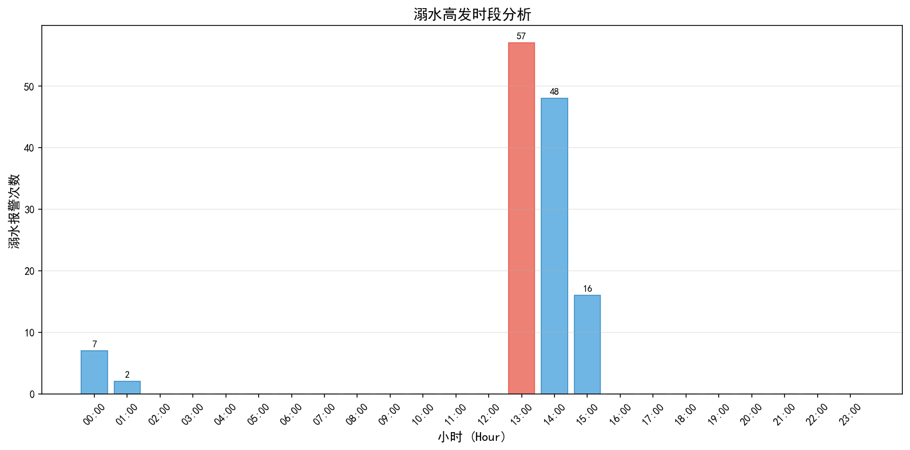

🌊 防溺水智能监测系统 - DAILY报告
生成时间: 2026-04-14 01:09:14
📊 基本统计
255
总事件数
130
溺水报警
133
检测人数
80.07%
平均置信度
⏰ 高发时段分析

📈 时段统计表
时段
报警次数
占比
00:00 - 01:00
7
5.4%
01:00 - 02:00
2
1.5%
13:00 - 14:00
57
43.8%
14:00 - 15:00
48
36.9%
15:00 - 16:00
16
12.3%